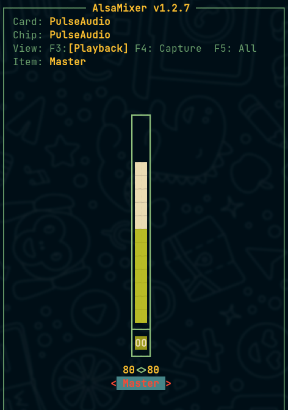
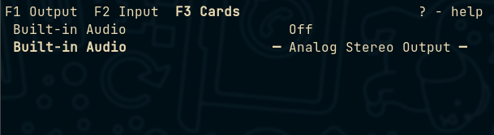

Linux
install module pf perl
export PERL5LIB="\$HOME/.cpan/build:\$PERL5LIB"
cpan YAML/Tiny.pm
ckeck process if runin
pgrep nvim
ps -C nginx
ps aux | grep "nvim" | awk ' \$11 == "nvim" {print \$11}'
- conddtion
if pgrep -x "gedit" > /dev/null
then
echo "Running"
else
echo "Stopped"
fi
calcule: sha hash
xbps-install -Sy coreutils
sha1sum
sha256sum
fix greedy
perl -pe 's#a.*?a#--#'
Linux
install module pf perl
export PERL5LIB="\$HOME/.cpan/build:\$PERL5LIB"
cpan YAML/Tiny.pm
ckeck process if runin
pgrep nvim
ps -C nginx
ps aux | grep "nvim" | awk ' \$11 == "nvim" {print \$11}'
- conddtion
if pgrep -x "gedit" > /dev/null
then
echo "Running"
else
echo "Stopped"
fi
calcule: sha hash
xbps-install -Sy coreutils
sha1sum
sha256sum
fix greedy
perl -pe 's#a.*?a#--#'
Driver
list the kernel modules:
this list shown the the name of kernel module for the used kernel driver.
lspci -knn
how to disable nouveau
$ cat /etc/modprobe.d/nouveau_blacklist.conf
# To block nouveau drivers: https://askubuntu.com/questions/841876/how-to-disable-nouveau-kernel-driver
blacklist nouveau
options nouveau modeset=0
$ uname -r
6.12
$ sudo xbps-reconfigure -f linux6.12
$ cat /etc/default/grub | grep GRUB_CMDLINE_LINUX_DEFAULT
GRUB_CMDLINE_LINUX_DEFAULT="quiet splash nouveau.modeset=0"
$ update-grub
get the used GPU now
glxinfo | grep 'renderer string'
Use two carts graphic for power performance: optimums
- using the
Proprietarydrivernvidia
By default, all apps will run by internal GPU, but if you want to run an app
with GPU change the value of DRI_PRIME to 1.
DRI_PRIME=1 app
- Install
nvidia
install last nvidia drivers first, then if the log from dmesg tell you, what's drivers should be installed in your system
xbps-install -S nvidia # or nvidia470 or nvidia390
- check if this driver wasn't marking as
blacklist
verify at /etc/modprobe.d/nouveau_blacklist.conf,
/usr/lib/modprobe.d/nvidia.conf, or /usr/lib/modprobe.d/nvidia-dkms.conf by
commenting it out.
nvidia require module bbswitch
xbps-install -S bbswitch
usbs drivers
lsusb -t
inxi -Fxxxz
to remove extra dkms modules
dkms status
sudo dkms remove v4l2loopback/0.12.5 --all
xbps-reconfigure -f linux5.19
Suckless Tools
how to use font in dwm or st or dmenu
if your are use some patch:
- you can not use multi font
font[]=font[1] - you can not use
"mono:size=16you must use"mono 16"
Try:
static const char font[] = "DejaVu Sans Mono 15";
how can found name of font on linux
fc-list --format="%{family}\n" | cut -d , -f 1 | sort | uniq
How to kill script that run xsetroot (statusbar)
kill -9 \$(ps -ef|awk '/ayoubStatusBar/{print \$2}'|grep -v "awk"|awk 'NR==1')
# or
pkill ayoubStatusBar
print \$2 because we have pid1 and pid2
pid1 myscript.sh
pid2 root that run this scripte : like terminal , or father of this scripts
grep -v for ignore process that grep for my script
NR==2 for return only 1er ligne : that pipe from last pipe
ps -ef grep(find) pid-pross by origin script : htop not view origin scripts always
change font using sed
sed -iE 's#(static char \*font = ").......*\$#\1FiraCode\ Nerd\ Font:size=15";#' config.def.h
sed -iE 's#(static char \*font2........).*\$#\1FiraCode\ Nerd\ Font:size=15" };#' config.def.h
Suckless Tools
surf
xxx webkit2gtk-devel gcr-devel
How to install dwm in Ubuntu-Linux
Xorg
sudo apt install xorg
Dependencies needed for compile dwm in Ubuntu linux from scratch is:
sudo apt install build-essential libx11-dev libxinerama-dev libxft-dev
Suckless Tools
surf
xbps-install -Sy webkit2gtk-devel gcr-devel
Dwm in void-linux
xorg
sudo xbps-install -y xinit xauth xorg-server xorg-minimal
Dependencies needed for compile dwm in void linux from scratch is:
sudo xbps-install -y base-devel libX11-devel libXft-devel libXinerama-devel freetype-devel fontconfig-devel
Suckless Tools
surf
xbps-install -Sy webkit2gtk-devel gcr-devel
Dwm in Arch-linux
Xorg
# TODO
Dependencies needed for compile dwm in arch linux from scratch is:
sudo pacman -S base-devel libx11 libxft libxinerama freetype2 fontconfig
UBUNTU
To convert any binary from the deb format to arch format, should be extract them, copy all contient files to our true path, and install our dependencies
Or, you can use, this script bellow, that automated all things.
- Arch
https://github.com/helixarch/debtap
- Voidlinux
https://github.com/toluschr/xdeb
fix apt
- add non signed repository to apt
deb [trusted=yes] http://xxxxxx yyy main
- fix _apt root
alias apt='apt-o APT::Sandbox::User=root'
Arch Linux
install all pkg from file
pacman -Syy \$(cat pacman.txt | sed '/^#/d' | tr '\n' ' ')
create user
# TODO
set time
# TODO
networking
# TODO
search for some files offline fro any pkgs
pkgfile --update
Void Linux
VOID LINUX
xbps-install -S xorg
or
xbps-install -Sy xorg-server xorg-fonts xinit
Driver
xbps-install -Sy mesa intel-ucode
xbps-install make cmake git wget curl bat exa htop zsh nvim neovim
Git
root from absolute path
git rev-parse --show-toplevel
- HOW view diff version of one file in two branch
the mybranch is new than master:
git diff old..new
should be write master..mybranch will be add + after any new line created by mybranch
(master) \$ cat file.txt
a
c
(mybranch) \$ cat file.txt
a
b
c
git diff master..mybranch -- /file1
a
+b
c
- view
diffbitween to dirs
\$ diff -rq ./dir1 ./dir2
- git
back/reset/restor/revet
\$ git reset --hard 6bc2e3a
- diff new
fileonly:
git diff --name-only --diff-filter=A 65833e30..c3098905
- submodule
git clone --recurse-submodules -j8 git://github.com/foo/bar.git
git submodule update --init --recursive
git locally
- pc:
mkdir /path/to/origin && cd \$_ - remote:
mkdir /path/to/backup && pushd \$_ # meen cd to dir2 - remote:
git init --bare - pc:
popd - pc:
git init - pc:
git remote add local /path/to/backup - pc:
touch aa{1..4}.txt - pc:
git add . - pc:
git commit -m 'init project' - pc:
git push -u local maste
find/search for string in commits in git
git rev-list --all | xargs git grep "string"
deleted file
Find by:
git log --diff-filter=D --summary file
Restore by:
git checkout dc5599 -- file
\$ git fetch --unshallow
how to login to phone
- install this app:
SimpleSSHD.apk, that is an open source- create directory called
sshin your android at:/storage/emulated/0/.ssh/- SimpleSSHD.apk: change
Home Directory -> /storage/emulated/0 - SimpleSSHD.apk: change
SSH PATH -> /storage/emulated/0/.ssh - get ip: the
ipis showing in yourapklike192.168.43.1 - port the default is
2222 - default password should shown in
app
- SimpleSSHD.apk: change
- create directory called
- fix error:
- in android: remove old files in
/storage/emulated/0/.ssh/* - in linux: remove old lines from
~/.ssh/known_hostslike:github.com ssh-ed25519 AAAAC3NzaC1lZ
- in android: remove old files in
$ cat ~/.ssh/id_rsa.pub |
ssh 192.168.43.1 -p 2222 "cat >> /storage/emulated/0/.ssh/authorized_keys"
How to mount termux by sshfs in linux
sshfs u0_a133@192.168.43.1:/data/data/com.termux/files/home/ -p 8022 /mnt/termux
terminal (local): download file from remote
$ scp -P8022 username@remote:/file/to/send /where/to/put
terminal (local): upload file to remote
$ scp -P8022 /file/to/send username@remote:/where/to/put
terminal (remote): download file from local
# TODO:
terminal (remote): upload file to local
# TODO:
To use vpn by ssh
usepremiusa2.vpnjantit.com:22
my number in voip:+1 442 946 2073
- testing
$ dos2unix usa2.vpnjantit.com/usa2.vpnjantit-tcp-8080.ovpn
$ sudo cp /usr/share/examples/openvpn /etc -r
$ sudo vim /etc/ssl/openssl.cnf
$ openssl ca -config openssl.cnf -extensions server_cert -notext -md sha256 -in csr.pem -out cert.pem
$ openssl ca -config /etc/ssl/openssl.cnf -extensions server_cert -notext -md sha256 -in csr.pem -out cert.pem
$ doas update-ca-certificates
$ sudo ln -s /etc/sv/ufw /var/service
$ doas openvpn --config u8080.ovpn --data-ciphers AES-256-GCM:AES-128-GCM:CHACHA20-POLY1305:AES-128-CBC
- file.ovpn
In any blocks inside this config file, replace with
auth-user-pass auth.txt
script-security 2
remote-cert-tls server
- USAGE:
$ sudo openvpn --config u8080.ovpn --data-ciphers AES-256-GCM:AES-128-GCM:CHACHA20-POLY1305:AES-128-CBC
rsa ed
Create rsa without prompt
ssh-keygen -b 2048 -t rsa -f ~/.ssh/id_rsa -q -N ""
From a local computer, we can typically log in via SSH using the following
command: ssh -p 8022 server_user@server_ip
Next, run python3 -m http.server -d ./src 8080 on the server.
But, directly accessing the server's content through
http://serverip:server_port may not work due to security restrictions. We can
overcome this using SSH tunneling.
For instance, on Android, we must first choose a valid port (e.g., 8080) for the server (ports like 3000 and 80 may not be valid). After running the server (e.g., mdbook, Python), the content will not be immediately accessible locally. We need to establish a forward tunnel to the server, mapping the server's port to a local port (e.g., 3001).
ssh -p 8022 -L 3001:localhost:8080 -L 3002:localhost:8081 server_user@server_ip
# OR
ssh -p 8022 -L 8080:localhost:8080 -L 8081:localhost:8081 server_user@server_ip
Now, the server's content will be accessible locally via
http://127.0.0.1:3001/ or http://127.0.0.1:8080/.
Therefore, to ensure proper website functionality, we must identify an available port on the server and utilize SSH tunnel forwarding.
Configuring NeoMutt with Gmail OAuth2 using mutt-wizard
This guide will walk you through setting up NeoMutt with Gmail using OAuth2 authentication via mutt-wizard.
Prerequisites
First, install the necessary dependencies:
sudo xbps-install -Sy cyrus-sasl-xoauth2 neomutt curl isync msmtp pass pam-gnupg notmuch abook urlview mpop
Installation
- Clone and install mutt-wizard:
git clone https://github.com/lukesmithxyz/mutt-wizard
cd mutt-wizard
sudo make install
- Generate a GPG key:
gpg --full-generate-key
- Initialize pass with your email:
pass init ayoub@gmail.com
Configuration
- Run mutt-wizard to add your Gmail account:
mw -a ayoub@gmail.com
-
Generate an app password for Gmail:
- Visit Google App Passwords
- Generate a new password for your email client
-
When prompted by mutt-wizard, enter the generated app password: you will see a key like this:
vJkl jtjk weqc rwzi
Troubleshooting
If you enter an incorrect password, you may need to remove the stored password:
rm /home/$USER/.password-store -rf
Then, re-run the mutt-wizard configuration process.
EASY AND FAST FILE SHARING FROM THE COMMAND-LINE.
| Service | Command to Upload File | Status |
|---|---|---|
| transfer.sh | curl -T foo.zip https://transfer.sh | off |
| big.tarr.hu | curl -T foo.zip http://big.tarr.hu | off |
| lusk.sh | curl -T foo.zip https://lusk.sh | on |
| xtn.sh | curl -T foo.zip https://xtn.sh | on |
how ram usage
\$ cat /proc/meminfo | awk 'FNR == 1 {tot=\$2} FNR==2 {free=\$2} FNR==3 {avai=\$2} FNR==4 {buf=\$2} FNR==5 {cach=\$2} FNR==21 {shem=\$2} FNR==24 {srec=\$2} {green=tot-free-(buf+cach);blue=buf;yellow=cach+srec-shem} END {print
(tot - free - (buf + cach+srec)) / 1024}'
Linux how to copy but not overwrite?
- skip existing files linux
rsync -a -v --ignore-existing
cp -nv
# Set date by cli
date --set '2021-09-14 22:16:00'
zsh stow
root=\${1:-root}
mkdir -p ~/.config/zsh
stow --dir=\$HOME/stow/zsh --target=\$HOME/.config/zsh void
stow --dir=\$HOME/stow/zsh --target=\$HOME/.config/zsh universe
stow --dir=\$HOME/stow/zsh --target=\$HOME init
exit
if [[ "\$root" = "root" ]];then
stow --dir=\$HOME/stow/zsh --target=\$HOME/.config/zsh void-root
else
stow --dir=\$HOME/stow/zsh --target=\$HOME/.config/zsh void-home
fi
\$ sudo apt-get install squashfs-tools
\$ unsquashfs -f -d /media/location1 /media/location2/file.squashf
how yo install man in void xbps
\$ xbps-install -Sy man-pages-posix man-pages
don't install if not needed
\$ man-dbman-db
Decrypt pdf
wak pdf decryption:
it's not need any password, just run.
# xbps-install -Sy qpdf
qpdf --decrypt ../input.pdf out.pd
if we have passord
qpdf --decrypt ../input.pdf out.pdf --password=1234
connect by adb
usb
- Enable
usb debugging - Select
PTP (Picture Transfer Protocol)
adb kill-server
adb start-server
adb devices
adb usb
Doidcam cli
adb forward tcp:4747 tcp:4747
droidcam-cli 127.0.0.1 4747
adb online only
- get the serial using the usb cable for the first time
\$ adb devices
connect using the ip of my phone
- active
adbwithout root
\$ adb -s XXXXX
- connect
adb connect 192.168.82.207:5555
adb devices
adb tcpip 5555
adb connect $(resolveip):5555
adb usb
adb disconnect
search for other OS
echo "GRUB_DISABLE_OS_PROBER=false" | tee /etc/default/grub
Gdrive
git clone --depth=1 https://github.com/carstentrink/gdrive
cd gdrive
# edit ./handlers_drive.go
# change cliend id and secrete_code
go install
go install github.com/msfjarvis/gdrive@latest
Active
# any command like
gdrive list
if you login with multi emails, should disconnected or use private-browser
download
to download this link
https://drive.google.com/u/1/uc?id=1z7RhJgZDDONsrv2mSoHxlkN3XBcvGc5T&export=download
use
gdrive download 1z7RhJgZDDONsrv2mSoHxlkN3XBcvGc5T
FIX SOUNDS
PIPEWIRE
sudo xbps-install -Sy pipewire wireplumber wireplumber-elogind bluez libspa-bluetooth rtkit
sudo ln -sv /etc/sv/rtkit /var/service
sudo ln -sv /etc/sv/bluetoothd /var/service
- config
pipewireusing user config.
~/.config/pipewire/
└── pipewire.conf.d/
├── 10-wireplumber.conf -> /usr/share/examples/wireplumber/10-wireplumber.conf
└── 20-pipewire-pulse.conf -> /usr/share/examples/pipewire/20-pipewire-pulse.conf
OLD STEPS
install wireplump-elogind for shared object that need elogind and active sv status elogind
active pipewire-pulse by uncomment this line
#{ path = "/usr/bin/pipewire" args = "-c pipewire-pulse.conf" }
start/Enable
no need any services, it's can run with autostart apps or .xinitrc ...
pipewire &
sleep 1 # if pipewire not running the wireplumber could not run.
wireplumber &
interface
we have pavucontrol and helvum
sound control
we can change sound volume using to 99% by:
$ pactl set-sink-volume 0 99%
OLD 2
fix sound work by sudo only
- select
module(driver)
$ cat /etc/modprobe.d/default.conf
options snd_hda_intel index=1
- check
alsamixer
$ alsamixser

- choose
builting audiothat notoffinpulsemixer
$ pulsemixer

unmout all, But danger
$ amixer scontrols | grep -oE "'.*'" | awk -F\' \
'{print "amixer -c 0 set \""$2"\" unmute 100"}' >> ~/speaker.txt
Bluetooth Setup and Troubleshooting on Void Linux
This guide will help you install and troubleshoot Bluetooth on Void Linux, specifically for Broadcom Bluetooth adapters.
INSTALL
-
Install Necessary Packages: Install the required firmware and packages for Bluetooth functionality:
xbps-install -S broadcom-bt-firmware xbps-install -S bluez bluez-alsa pipewire elogind # elogind is used by pipewire to create the /run/user/1000 directory
FIX
-
Load Bluetooth Modules: Ensure the necessary Bluetooth kernel modules are loaded:
modprobe btusb modprobe bluetooth -
Unblock Bluetooth: Make sure Bluetooth is not blocked:
rfkill unblock bluetooth -
Enable Services: Enable and start the required services:
ln -s /etc/sv/elogind /var/service ln -s /etc/sv/bluetoothd /var/service
GET MISSING FIRMWARE FILES
-
Download and Install Missing Firmware: If your Bluetooth adapter requires specific firmware files, download and place them in the correct directory:
mkdir -p /lib/firmware/brcm wget -O /lib/firmware/brcm/BCM43142A0-04ca-2006.hcd https://github.com/winterheart/broadcom-bt-firmware/raw/master/brcm/BCM43142A0-04ca-2006.hcd -
Reload Bluetooth Modules and Restart Service: Reload the Bluetooth modules and restart the Bluetooth service to apply changes:
modprobe -r btusb sv restart bluetoothd
LOG USEFUL INFORMATION FOR TROUBLESHOOTING
-
Check for Errors in Kernel Logs: Use
dmesgto check for Bluetooth-related errors, such as missing firmware files:dmesg | grep -i bluetooth -
Verify Firmware File: Ensure the firmware file is correctly placed in the
/lib/firmware/brcm/directory:ls /lib/firmware/brcm/BCM43142A0-04ca-2006.hcd
TROUBLESHOOTING STEPS
-
Verify Bluetooth Service Status: Ensure the Bluetooth service is running:
sv status bluetoothd -
Check for Available Bluetooth Controllers: Use
bluetoothctlto list available Bluetooth controllers:bluetoothctl > list -
Additional Debugging: If issues persist, additional debugging may be required, such as checking system logs or verifying hardware compatibility.
- must source
~/.tmux.confto load any change in.tmux.conf - must use correct var
\$TERMasexport TERM=screen-256color-bc - if
screen-256color-bccause problem with zsh/kitty dont initialise\$TERM
zsh input and typing handled uncorrected
check if terminfo is build correctly, especially with suckless/st, in this case, we can use sudo make install clean.
force using xterm-256color
if you want to use export TERM=xterm-256color in .zshrc instead of export TERM=xterm
ln -sf /usr/share/terminfo/x/xterm-color /usr/share/terminfo/x/xterm-256color
export TERM=xterm-256color
notify
xbps-install -Sy notify-osd
export some variables
eval `dbus-launch --auto-syntax`
elogind
elogindcould be essentiel to initialise$XDG_RUNTIME_DIRto/run/user/1000.- but
elogindcould be make contradiction with dwm when it's rundbus-run-session dwm.
Syntax Highlight
From highlightjs.org/download, I specified only few languages, to download them

I got this zip

I have chosen highlight.min.js, by:
cp ~/Download/highlight.min.js ~/mybook/theme/highlight.js
├── book.toml
├── src
│ ├── chapter_1.md
│ └── SUMMARY.md
└── theme
├── highlight.css
└── highlight.js
MISSING
highlight.css can't load from original highlightjs repo automatic
wget https://github.com/highlightjs/highlight.js/blob/84719c17a51d7bb045f2df441b9c00f871f7c063/src/styles/base16/github.css \
-O ~/mybook/theme/highlight.css
but I can load it manually with some extension like stylus
OR
add to book.toml
[output.html]
additional-css = ["./theme/highlight.css"]
with some modification in theme/highlight.css
.hljs {
+ display: block;
+ overflow-x: auto;
color: #adbac7;
- background: #22272e;
}
Wifi on Linux
get back Wlan0 name
# cat /etc/udev/rules.d/80-net-name-slot.rules
net.ifnames=0
unblock network
# rfkill # view all devices
# rfkill unblock bluetooth
# rfkill unblock wlan
active network
Use ip command to bring up the wifi interface:
# sudo ip link set wlan0 up
Or ifconfig:
# ifconfig wlan0 up
Wifi info
# iwlist wlan0 scan
get Signal and name of SSID
# iw dev wlan0 link
ad-hoc
Check if your Wifi is supported by `AP``
# iw phy |grep -iA6 'Supported interface modes:'
- use
hostapd - use
create_ap
Brightness
Xrandr
- grep monitor :
xrandr -q |grep connected
eDP1 connected primary 1280x800+0+0 (normal left inverted right x axis y axis) 217mm x 135mm
DP1 disconnected (normal left inverted right x axis y axis)
HDMI1 disconnected (normal left inverted right x axis y axis)
VIRTUAL1 disconnected (normal left inverted right x axis y axis)
- change from 0 to 1
xrandr --output eDPy --brightness 0.5
Backlight brightness
- use cli to change to 50%
$ xbacklight -set 50
- use echo to /sys/.../file
# sudo chown $USER:$video /sys/class/backlight/*/actual_brightness
# sudo chmod 0664 /sys/class/backlight/*/actual_brightness
# echo 937 | sudo tee /sys/class/backlight/*/actual_brightness
screen saver
use 300 seconde to go to screen saver
xset s 300
fix i3status-rs
we should use elogind that provide an service for dbus like systemd that help to adjust the backlight.
xbps-install -y elogind
sudo ln -s /etc/sv/elogind/ /var/service
then logout or reboot.
Install theme
xbps-install -Sy lxappearance
all theme store in
ls /usr/share/themes
lxappearance show standard themes without
one or this tow repo
xbps-install -Sy gnome-themes-standard
xbps-install -Sy gtk-engine-murrine
compile some theme by messon
xbps-install -Sy sassc glib-devel
cursor
xbps-install -Sy breeze-purple-cursor-theme
gtk debug error
# if you export this var like that:
export GTK_DEBUG="interactive"
# to disable one time
unset GTK_DEBUG
# or from .bashrc to disable it completely
unset export GTK_DEBUG="interactive"
crate swapfile
SWAPFILE="\${1:-/swapfile}"
GB="\${2:-4G}"
fallocate -l "\$GB" "\$SWAPFILE"
chmod 600 "\$SWAPFILE"
mkswap "\$SWAPFILE"
swapon "\$SWAPFILE"
BASH
export PS1="\[\e]0;\u@\h: \w\a\]\${debian_chroot:+(\$debian_chroot)}\[\033[01;32m\]\u@\h\[\033[00m\]:\[\033[01;34m\]\w\[\033[00m\]\$"
Overlay fs mount xbps
this use to mount to dir in one dir
\$ sudo mount -t overlay overlay -o lowerdir=/opt/xbps-src/void-packages:/opt/xbps-src/ayoub,upperdir=/opt/xbps-src/xbps-up,workdir=/opt/xbps-src/xbps-work /opt/xbps-src/xbps-merg
mount pkg for void-packages
- don't use
lnorln -s - use
mount --bind:
\$ mkdir /path/to/new/dir
\$ mount --bind /path/to/dir /path/to/new/dir
fix mounted directory
some shared library not word in tmpfs/shm, I should remount with permission to exec
mount --bind /path/to/dir /new/dir
mount -o remount,exec,bind /new/dir
How to switch bettwin layout arabic/us in keybroad
you can use sxhkd
# keybroad layout us
alt + shift + u
setxkbmap us
# keybroad layot arabic
alt + shift + a
setxkbmap ara
or use Ctrl and Alt
setxkbmap -layout us,ara -option grp:ctrl_alt_toggle
How remap key in lunix
to get key code on use xev:
xev | awk -F'[ )]+' '/^KeyPress/ { a[NR+2] } NR in a { printf "%-3s %s\n", \$5, \$8 }'
to remap on use xmodmap/setxkbmap...
xmodmap -e 'keycode 66 = Shift_L'
Power management/Suspend and hibernate
Grub setting
- UUID for
swapfile
findmnt -no UUID -T /swapfile
- offset for
swapfile
sudo filefrag -v /swapfile | awk '$1=="0:" {print substr($4, 1, length($4)-2)}'
- add to
/etc/default/grub
GRUB_CMDLINE_LINUX_DEFAULT="quiet ... resume=UUID=c20be35e-47be-4e7d-919f-966ba1edf0ea resume_offset=2224128"
Dracut setting
- add the
module
cat /etc/dracut.conf.d/resume.conf
add_dracutmodules+=" resume "
- generate the
initram
Use the linux<x>.<y>
uname -r
sudo xbps-reconfigure -f linux5.18
must install tow wrt lib for libinput
\$ xbps-install -Sy libinput-devel wlroots-devel xorg-server-xwayland wayland-devel
wyland protocol
\$ xbps-install -Sy wayland wayland-protocols wlroots
cpu info
$ cat /proc/cpuinfo
dmidecode
$ inxi -Fxxxz
Drivers
booted system boot_kernel_version=$(uname -r)
if /mnt/chroot_system depend on some drivers, it's try to load the drivers from /mnt/chroot_system/lib/modules/$boot_kernel_version/, so it's easy to install the some kernel version in two systems or link the chroot system with bootable system, then try to install modules in bootable kernel.
fix xrdb
xauth +
How to open DISPLAY in chroot envirenmet
- get auth key
in your original pc ,execute:
xauth list
latitude/unix:0 MIT-MAGIC-COOKIE-1 d4474d13c
- put auth key in
~/.Xresources
in chrooted linux create ~/.Xresources in first time
touch ~/.Xresources
- add key by executing:
xauth add latitude/unix:0 MIT-MAGIC-COOKIE-1 d4474d13c
in minimal linux:
- ubuntu
apt install x11-apps
apt install xauth
mkdir /mnt/freebsd
mount /dev/da0s1 /mnt/freebsd
chroot /mnt/freebsd /bin/env -i TERM=$TERM /bin/csh
get the window class
xprop | awk '
/^WM_CLASS/{sub(/.* =/, "instance:"); sub(/,/, "\nclass:"); print}
/^WM_NAME/{sub(/.* =/, "title:"); print}'
output:
instance: "Navigator"
class: "Firefox"
title: "Mozilla Firefox
dwm specified some windows to specified tag
if the some apps have tow windows, each windows should specified the class and instance and title, that help dwm to disting between windows
static const Rule rules[] = {
/* class instance title tags_mask isfloating monitor */
{ "Firefox", "Toolkit", "Picture-in-Picture", 1 << 4, 0, -1 },
{ "Firefox", "Navigator", "Mozilla Firefox", 1 << 3, 0, -1 },
}
Check sig key
gpg --auto-key-retrieve --verify artix-base-s6-20200214-x86_64.iso.sig artix-base-s6-20200214-x86_64.iso
Get large dirs
du -h -d 1 /usr/lib | sort --sort=human-numeric
HOW TO USE flameshot
Capture a region using the GUI, and have it automatically saved to your pictures folder when clicking the save button in GUI
\$ flameshot gui -p ~/Pictures
Capture the active monitor and save it automatically to your pictures folder
\$ flameshot screen -p ~/Pictures
Capture the full desktop (all monitors) and save it automatically to your pictures folder
\$ flameshot full -p ~/Pictures
USE NON-COMPATIBLE BINARRY
sometimes, I can find some apps in my distrubution, or I want a version that new or old, that I can get in my distrubution, and I can build it from scractch(probably need new/old gcc/clang or property),
use ld-linux.so
The ld-linux.so could search for shared and static libs (binnary libs, created by gcc/clang).
The ld-linux.so will execute apps, when resolve the libs.
To run aircrack-ng, I should have some libs in my system, I could use the libs from wifislax too.
Here, I have multi libs of linux wifislax in current directory.
LD_LIBRARY_PATH=$PWD/lib:$PWD/usr/lib ./ld-linux.so.2 ./aircrack-ng --help
Complex apps
for exemple, when apps wrap by bash scripts, like:
#!/bin/bash
aircrack-ng --help
the ld-linux.so cannot launch this script, to resorve this probleme:
- recreate bash script
- use
export LD_LIBRARY_PATH
ls-linux.so problems
When useing export, how to tell linux what lib-linux.so should use, lib-linux.so.2 or lib-linux.so3 or $PWD/lib/ld-linux.so.2…
PyTorch
welcome to the manual for installing the pytorch python library in Linux(Voidlinux)
we should look here
To install pytorch you should get right version for:
Nvidia drivercuda or cudatoolkit or pytorch-cudacuDNNpytorchcuDNN
1. Find Versions
nvidia driver version
simple way is install the latest version of driver, and look at the output of dmsg to find the recommend version of nvidia driver, for me: GeForce 820m is nvidia390
cuda version
You must choose a cuda version that compatible with your driver, and with Compute Capability
- [driver] check driver here
- [Compute Capability] Look here for new or (legacy)[https://developer.nvidia.com/cuda-legacy-gpus] to get the
Compute Capability.
for me:
- the new cuda version that support my driver nvidia390 is CUDA 9.1 (9.1.85)
- the Compute Capability for nvidia 820m is 2.1 firmi, that compatible with
so i will try with cuda 9.0 and cuda 8.0
cuDNN
go to cuDNN website, and search for cuDNN version that comatible with you version pf cuda that already get already, you can get something like that.
Download cuDNN v8.7.0 (November 28th, 2022), for CUDA 11.xDownload cuDNN v7.6.5 (November 5th, 2019), for CUDA 9.0if you yourcuda v9.0you should usecuDNN v7.6.5
PyTorch
to get the right version for pytorch that conforme with cudatoolkit go to this website
for me i get:
conda install pytorch==1.1.0 torchvision==0.3.0 cudatoolkit=9.0 -c pytorch
2. install
install nvidia390
sudo xbps-install -S nvidia390
cuda 10.1
wget -c https://developer.nvidia.com/compute/cuda/10.1/Prod/local_installers/cuda_10.1.105_418.39_linux.run
sudo sh cuda_10.1.105_418.39_linux.run --silent --toolkit --override --tmpdir=$PWD/dir3
TODO:
-
fixed gcc12 unssuprted by
--overrideflag -
install
gcc12byxbps
conda
Requirement:
python3.7.5pytorch=1.3.1torchvision=0.4.2cudatoolkit=9.2.148cudnn=7.6.3
conda create --yes -n env5 python=3.7
conda install \
pytorch=1.3.1 \
torchvision=0.4.2 \
cudatoolkit=9.2.148 \
cudnn=7.6.3 \
-c pytorch
conda install \
pytorch=1.1.0 \
torchvision=0.3.0 \
cudatoolkit=9.0 \
cudnn=7.5 \
-c pytorch